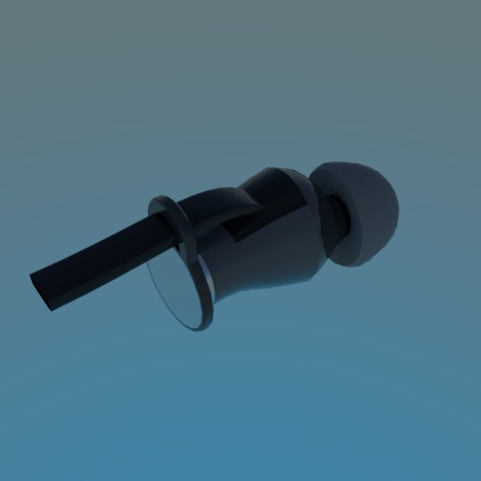
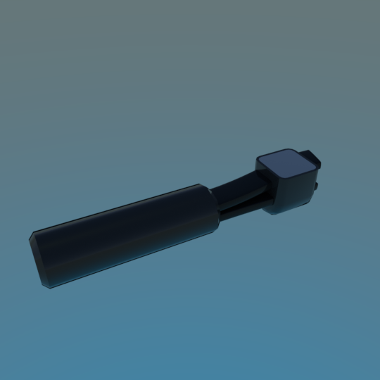
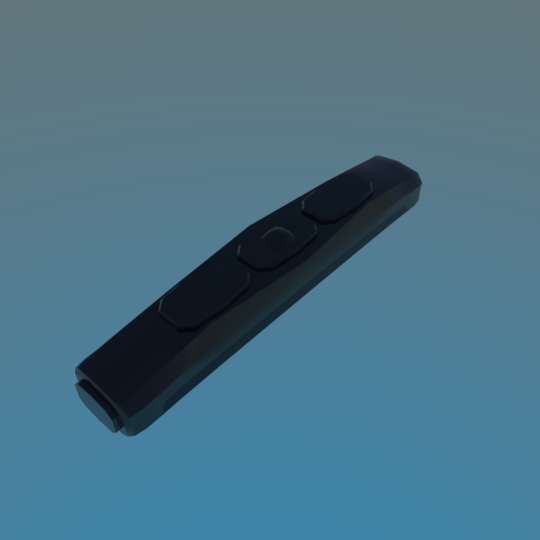

Here is a 3D model of the Sennheiser M2 IEG earphones, otherwise known as the Momentum in-ear earphones. I own a pair and so I've recreated in digitally. Most earphones at a distance look the same anyway, so it makes for good entourage.
The earphones come in three parts: the buds, the coupler (that part where the two earbud wires join together) and the volume rocker. You can extract the wire profile and the material from the model, and then model the wire yourself to suit your scene. Wires are not provided.


Also missing from the model is the audio jack.
Materials
The colours have been calibrated with Macbethcal but the specularity and roughness values are guessed.
Usage
This Radiance model follows the Radiance Filesystem Hierarchy
Standard. As
such, please run make lib to build the Radiance mesh file. Once done, you can
use this in your scene by:
!xform lib/earphones-sennheiser-m2-ieg/obj/bud.rad
!xform lib/earphones-sennheiser-m2-ieg/obj/coupler.rad
!xform lib/earphones-sennheiser-m2-ieg/obj/volume-rocker.rad
Authors
This model was created by Dion Moult.